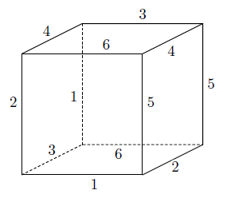

Problem ID 64372
Find the largest number of colours in which you can paint the edges of a cube $($each edge with one colour$)$ so that for each pair of colours there are two adjacent edges coloured in these colours. Edges are considered to be adjacent if they have a common vertex.
Solution
There are several ways to colour the edges of a cube in six colours in accordance with the condition of the problem. Here is one of them:

We show that this cannot be done with more than six colours.
Suppose we painted the edges of a cube in seven or more colours. Since there are 12 edges in the cube, there must be a colour, for example, white, in which only one edge is coloured. For each cube edge, there are exactly four edges adjacent to it. Hence, with a white colour in a pair there can be no more than four colours, which means that there cannot be more than five colours in all. And so, we have a contradiction.
Answer
6 colours.